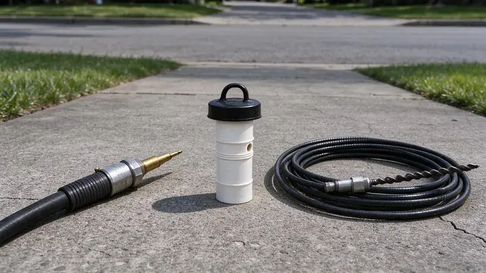

What Is Actually in the Pipe
Before we pick a tool, we want to know what the clog is made of. A sudden stop after wipes go down is not the same job as a kitchen drain that has been getting slower for months. Roots and grease call for different tools. The history tells us a lot.
Basements are common in Utah homes, which places water heaters, softeners and main drains below grade where leaks can go unnoticed.
Ground movement opens joints, and open joints let roots in. A cable coming back out of a sewer line wrapped in fine roots is one of the most common things we see. It also tells us a simple clearing will not last. Roots regrow fast.
Drain Snaking: The Standard First Step
A drain snake, also called an auger or a cable machine, is a long coiled steel cable with a cutting head on the end. It goes into the line, a motor turns it, and the cutter chews through the blockage. Most calls take under an hour. For a sink or tub, a small handheld unit with quarter-inch or 3/8 cable does the job. Main lines get a larger machine with 1/2 or 3/4 inch cable and blades sized to the pipe.
- Good for: hair, wipes, a single hard blockage, light roots
- Limits: opens a channel but leaves grease and scale on the pipe walls
- Price: usually the lower-cost option
The weakness is that a snake opens a hole but does not clean the pipe. In a 4-inch pipe lined with grease, the cable cuts maybe a 2-inch path that works for a few weeks before it starts to slow again. After that, the leftover grease grabs more debris and it clogs again. Repeat calls are the sign.
Hydro Jetting: Cleaning the Whole Pipe
A hydro jetter pushes water through a hose at 3,000 to 4,000 psi on a typical residential line. The nozzle has rear-facing jets that pull it forward up the line and scour the pipe wall all the way around as it goes. It cuts grease and sludge off the walls. It shears roots right back to the joint.
Utah water is among the most mineral-heavy in the country in many areas, and scale builds up quickly in water heaters, faucets and appliances.
Scale and grease are where jetting really earns its cost. Inside cast iron, mineral scale narrows the bore and gives grease a rough surface to grab. A jetter with a descaling nozzle takes it back close to the original diameter, and the line stays open for a year or more instead of a few weeks. Commercial kitchens jet on a schedule.
- Good for: grease, sludge, scale, recurring roots
- Limits: needs a camera check first on old or fragile pipe
Choosing Between Them
A first-time clog in a single fixture almost always gets a snake. It is quick and cheaper, and it fixes the problem most of the time. A line that clogs again within a few months, or one that a cable cannot get through, gets a camera and then usually a jetter. The camera decides.
Fast growth means much of the housing in Utah is relatively new, with PEX supply lines and plastic drains in most recent construction.
Pipe condition limits the choice. Full-pressure jetting in cracked clay or rusted-through cast iron can open the damage further and turn a cleaning into a dig. With an older line, we put a camera in first and either jet at reduced pressure or stick to a cable if the pipe is fragile. PVC and newer cast iron handle full pressure fine.
Booking the Right Service
Tell the dispatcher which drains are slow and how long it has been happening. Knowing that, we can usually send the right equipment the first time. Our trucks at BPK Plumbing carry both cable machines and jetters across Utah, so the tech can switch methods on the same visit if the camera calls for it. You can reach us at (385) 543-4073. It helps to mention past root trouble or recent remodeling.
Need a licensed plumber in Utah?
BPK Plumbing answers 24/7 and offers same-day service across Utah.